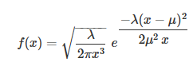

Veuillez cliquer ci-dessous pour utiliser le module de calcul
Modules de Calcul

📊 Calculs Mathématiques : Loi Inverse Gaussienne
Découvrez notre module interactif pour explorer la loi inverse gaussienne,
une distribution clé en mathématiques et statistiques. Cet outil vous permet d'analyser des données
et de visualiser vos résultats sous forme de graphiques dynamiques.
🛠 Comment ça marche ?
Entrez vos paramètres :
x : La valeur à analyser.
λ (forme) : Définit la forme de la distribution.
μ (espérance) : Définit la moyenne de la distribution.
Choisissez une méthode de calcul :
Rectangles médians
Rectangles trapèzes
Méthode de Simpson
Obtenez vos résultats :
Visualisez vos données sous forme de graphiques interactifs pour mieux comprendre les variations.